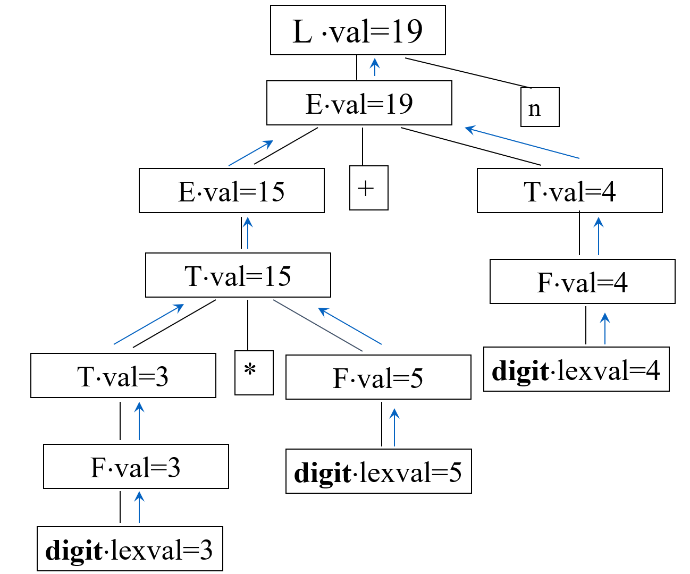
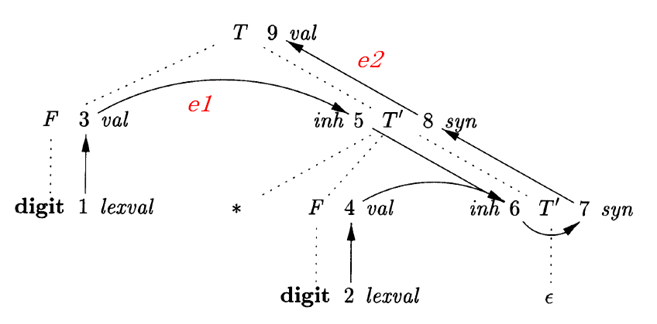
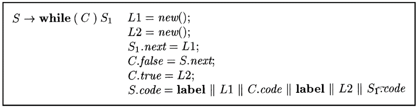
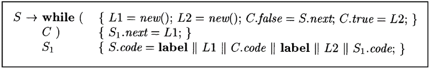

本文最后更新于：7 天前
语法制导翻译
翻译的任务是语义分析和正确性检查，若正确，则翻译成中间代码或目标代码。
基本思想：
- 语法结构具有规定的语义
- 根据翻译的需要设置文法符号的属性，已描述语法结构的语义
- 例如一个变量的属性有类型，层次，存储地址等。表达式属性有类型，值
- 属性值的计算和产生式相联系，随着语法分析的进行，执行属性值的计算，完成语义分析和翻译的任务
语法制导定义SDD是上下文无关文发CFG和属性/规则的结合，属性和文法符号相关联，规则和产生式相关联。
语法制导翻译是在产生式体中加入语义动作，并在适当的时候执行这些语义动作。
语法制导定义SDD
语义分析的任务：
- 语义检查
- 例：类型、运算、维数、越界
- 语义处理
- 例：变量的存储分配、表达式求值、语句的翻译（中间代码的生成）
处理办法有两种：
- 对每一个产生式编制一个语义子程序，当一个产生式获得匹配时，调用相应的语义子程序实现语义检查与翻译
- E→
E1 +T E.val:=E.val+T.val - T→
T1 *FT1 .val:=E.val*F.val - F→id F.val:=id.val
- E→
- 适合在完成归约时进行
- 在产生式右部适当位置，插入相应的语义动作，按照分析的进程，执行遇到的语义动作
- D→T {L.in:=T.type} L
- T→int {T.type:=integer}
- T→real {T.type:=real}
- L→{
L1 .inh:=L.inh}L1 , id{…}
- 适合在进行推导时完成
继承属性和综合属性
综合属性：分析树结点N上的非终结符号A的属性值由N的产生式所关联的语义规则定义，又称S-属性定义。必然通过N的子结点或N本身的属性值来定义。
继承属性：分析树结点N的属性值由N的父节点所关联的语义规则来定义，又称为L-属性定义。依赖于N的父结点，N本身和N的兄弟结点上的属性值。
不允许N的继承属性通过N的子结点上的属性来定义，但允许N的综合属性依赖于N本身的继承属性。终结符号有综合属性，但没有继承属性。
S属性的SDD，可以按照自底向上方式求值：
| 产生式 | 语义规则 |
|---|---|
| L→E n | L.val = E.val |
| E→ |
E.val = |
| E→T | E.val = T.val |
| T→ |
T.val = |
| T→F | T.val = F.va; |
| F→(E) | F.val = E.val |
| F→digit | F.val = digit.lexval |
输入3*5+4n的注释语法分析树：

适用自顶向下分析的SDD，带有综合属性的SDD：
例如如下消除左递归的表达式文法
- T→FT'
- T'→*F
T1 ' - T'→ε
- F→digit
T中不含运算符，无法直接使用综合属性。
| 产生式 | 语义规则 |
|---|---|
| T→FT' | T'.inh = F.val T.val = T'.syn |
| T'→*F |
T'.syn = |
| T'→ε | T'.syn = T'.inh |
| F→digit | F.val = digit.lexval |

SDD的求值顺序
依赖图描述了某棵特定的分析树上各个属性实例之间的信息流。
依赖图的构造：
- 对分析树每个结点X，对与X对应的文法符号的每个属性a，在依赖图中为a构造一个结点
- 若属性X.a的值依赖于Y.b的值，则构造一条从Y.b指向X.a的有向边
形如a*b的语法分析树：

可能的计算顺序：1,2,3,4,5,6,7,8,9或1,3,5,2,4,6,7,8,9
属性值计算顺序可以按依赖图的拓扑排序来计算，图中不能存在环。给定一个SDD很难判定是否存在一颗分析树，其对应的依赖图包含环。而特定的SDD一定不包含环，且具有固定的排序模式–S属性SDD和L属性SDD
S属性的SDD
- 每个属性都是综合属性
- 都是根据子构造的属性计算整个构造的属性
- 在依赖图中，通过子结点的属性计算父结点的属性
- 自底向上方法：在构造分析树子结点同时计算相关属性
- 自顶向下方法：在递归子程序法中，在过程A()的最后计算A得属性
在分析树上自底向上计算SDD时，可采用后序遍历。
L属性的SDD
- 每个属性
- 要么是综合属性
- 要么是继承属性，且产生式A→
X1 X2 …Xn 中Xi 的继承属性仅依赖于- A的继承属性
Xi 左边符号X1 ，X2 ，…Xi-1 的属性Xi 本身的属性，但Xi 的全部属性不能在依赖图中形成环路
在依赖图中看，依赖图的边只能从左到右，不能从右到左。
语法制导翻译方案SDT
语法制导翻译方案SDT是在产生式体中嵌入程序片段（语义动作）的上下文无关文法。
SDT的基本实现方法是建立语法分析树，然后从左向右，深度优先的执行这些动作。用SDT实现两类重要的SDD：
- 基本文法为LR的，SDD是S属性的
- 基本文法是LL的，SDD是L属性的
后缀翻译方案：S-SDD转SDT
文法可以自底向上分析且SDD是S属性的，可以构造出SDT，所有动作都放在产生式最后，分析过程中按照这个产生式规约时执行这个动作，计算得到的属性值放在栈中。所有动作都放在产生式右端的SDT称为后缀翻译方案。
例子：
L→E n {print(E.val);}
E→
E→T {E.val = T.val;}
T→
T→F {T.val = F.val;}
F→(E) {F.val = E.val;}
F→digit {F.val = digit.lexval;}
可以再LR语法分析过程中实现：
- 归约时执行相应语义动作
- 定义可以记录各个文法符号的属性的union结构
- 栈中每个文法符号附带一个union结构
- 按照产生式A→XYZ归约时，Z的属性可以再栈顶找到，Y的属性在下个位置，X的属性在下下个位置
L属性定义的SDT
- 将计算非终结符号A的继承属性的动作放在产生式中紧靠A之前，如果A有多个属性，要注意属性的计算顺序
- 将计算产生式头的综合属性的动作放在产生式的右端
L属性SDT例子：


L-SDD的SDT实现
若一个L-SDD的基本文法可以使用LL分析技术，则它的SDT可以在LL或LR语法分析过程中实现，即可在
- 非递归预测分析过程中进行语义翻译
- 递归预测分析过程中进行语义翻译
- LR分析过程中进行语义翻译